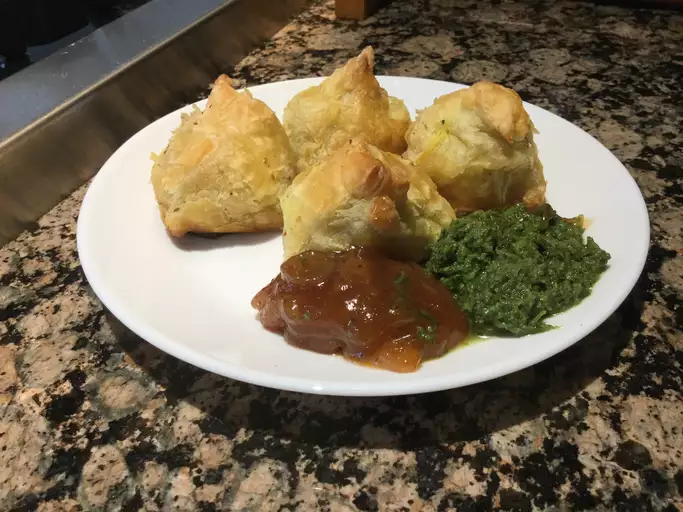

Samosa

A samosa or singara is a fried or baked pastry with a savory filling, including ingredients such as
spiced potatoes, onions, and peas. It may take different forms, including triangular, cone, or half-moon shapes,
depending on the region. Samosas are often accompanied by chutney, and have origins in medieval times
or earlier
Ingredients
- 4 potatoes, peeled and cubed
- ¼ cup oil
- 2 small onions, finely chopped
- 3 tablespoons coriander seed
- 1 teaspoon salt
- ½ teaspoon ground allspice
- 4 prepared pie crusts
Preparation
- Place potatoes into a large pot and cover with salted water; bring to a boil. Reduce heat to medium-low and
simmer until tender, about 20 minutes. Drain and transfer potatoes to a bowl; coarsely mash
- Preheat oven to 400 degrees F (200 degrees C)
- Heat oil in a skillet over medium-high heat; cook and stir onions, coriander seed, curry powder, ginger,
salt, turmeric, cumin, allspice, cayenne pepper, and cinnamon until onion is lightly browned, about 5
minutes. Remove skillet from heat and stir tomatoes and peas into onion mixture; pour into mashed potatoes
and thoroughly mix. Cool completely.
- Cut each pie crust into 8 even triangles. Spoon filling onto the wide end of each triangle; fold corners
over filling creating a triangular 'hat' shape. Pinch the dough together to form a seal. Brush egg white
over each samosa and arrange on a baking sheet.
- Bake in the preheated oven until samosas are golden brown, about 15 minutes
Back to Home